Дрессировка собак
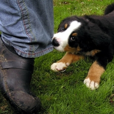
Как не стать жертвой своей собаки
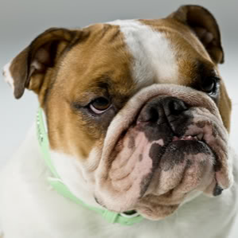
Дрессировать ли собаку
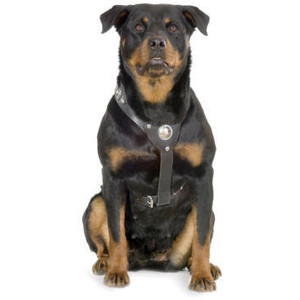
Перед тем, как начать дрессировать собаку
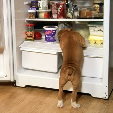
Как обучить собаку команде "фу"
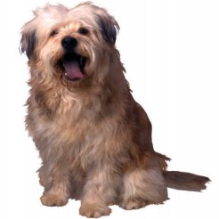
Как правильно дрессировать собаку
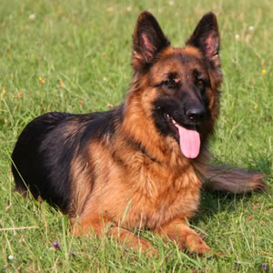
Что такое ОКД
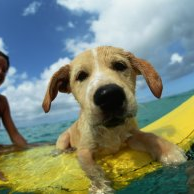
5 основных методов обучения собак
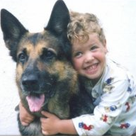
Как установить нужный контакт и взаимопонимание
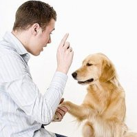
Как дрессировать собаку
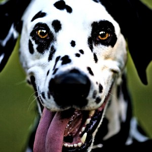
Эмоции и их роль в дрессировке
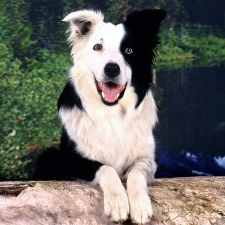
Результат дрессировки
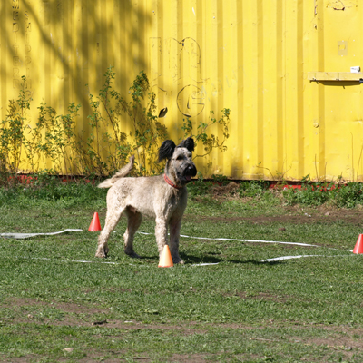
Что такое обидиенс
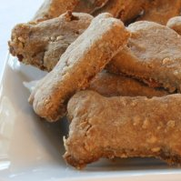
Подбор поощрения для собаки